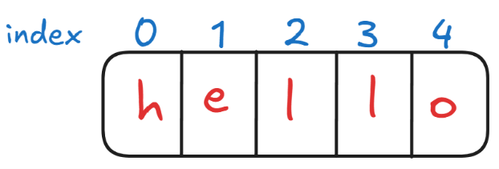

Strings
A string is a sequence of characters. Underneath it behaves like a dynamic array of characters, but the extra rules and operations layered on top make it an abstract data type in its own right.
Both, depending on where you look. Internally a std::string is an array of characters that grows on demand, and it's mutable in the same way. What makes it an ADT rather than a plain array is the set of built-in operations that come with it — searching, slicing, concatenating, comparing — which is why we treat it as its own structure here.
Declaration
C++ gives you the string type from the standard library. Include <string> and assign like any other value.
Click to expand
#include <string>
using namespace std;
string s1 = "Hello World!";Accessing characters
Exactly like an array: index from 0, and the last character sits at size() - 1.
Click to expand
string s = "hello";
cout << s[0]; // h
cout << s[1]; // e
Each character occupies one slot, addressed by its index.
Traversal
The same two loops you use on a vector — index-based when you need the position, range-based when you only need the character.
Click to expand — both loop styles
Index-based loop
string s = "hello";
for (int i = 0; i < s.size(); i++) {
cout << s[i] << " ";
}Range-based loop
string s = "hello";
for (char c : s) {
cout << c << " ";
}String and number conversion
Plenty of problems hand you digits as text, or expect a number back as text. Two directions, both one function call.
Click to expand — stoi, to_string and friends
String → number
string s = "2015";
int x = stoi(s); // 2015| Function | Converts to |
|---|---|
| stoi(s) | int |
| stol(s) | long |
| stoll(s) | long long |
| stof(s) | float |
| stod(s) | double |
| stold(s) | long double |
Number → string
int x = 2024;
string s = to_string(x); // "2024"Lowercase and uppercase
Case folding shows up constantly in matching problems — one character at a time, or the whole string at once.
Click to expand — toupper, tolower and transform
A single character
char c = 'a';
char upper = toupper(c); // 'A'
char lower = tolower(c); // 'a'A whole string
Loop over it and convert in place — note the &, without it you'd be modifying a copy.
string s = "HeLLo";
for (char &c : s) {
c = tolower(c);
}
// "hello"Or hand the job to transform():
#include <algorithm>
string s = "HeLLo";
transform(s.begin(), s.end(), s.begin(), ::tolower);
// "hello"| Argument | What it is |
|---|---|
| s.begin() | Iterator to the first character to transform |
| s.end() | One past the last character — marks the end of the range |
| s.begin() | Output iterator: writing back into the same string, in place |
| ::tolower | The function applied to each character |
Substrings
A substring is a contiguous run of characters taken from a string. substr() is one of the operations you'll reach for most — pattern matching, parsing, recursion on prefixes and suffixes.
Click to expand — syntax and examples
s.substr(start_index, length)start_index— index of the first character to extract.length— how many characters to take. Leave it out and the substring runs to the end of the string.
string s = "ABCD";
s.substr(0, 1); // "A" — from index 0, one character
s.substr(1, 2); // "BC" — from index 1, two characters
s.substr(2); // "CD" — from index 2 to the end
s.substr(s.size() - 1); // "D" — the last characterCommon operations
The everyday handful: length, joining, adding and removing at the end, and comparison.
Click to expand — size, concatenation, push_back, pop_back, comparison
// size
string s = "hello";
cout << s.size(); // 5
// concatenation
string a = "hello";
string b = "world";
string c = a + " " + b; // "hello world"
// add a character at the end
string t = "abc";
t.push_back('d'); // "abcd"
// remove the last character
string u = "abcd";
u.pop_back(); // "abc"
// comparison
if (a == "hello") {
cout << "Equal";
}| Operation | What it does |
|---|---|
| s.size() | Number of characters |
| s.empty() | True when the string has no characters |
| a + b | Join two strings into a new one |
| s.push_back(c) | Append one character |
| s.pop_back() | Remove the last character |
| a == b | Compare character by character |
| s.substr(i, n) | Extract a contiguous slice |
== on strings compares contents, not addresses — unlike C-style char*, where it would compare pointers and quietly give you the wrong answer.